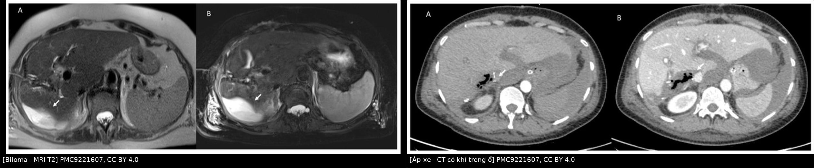
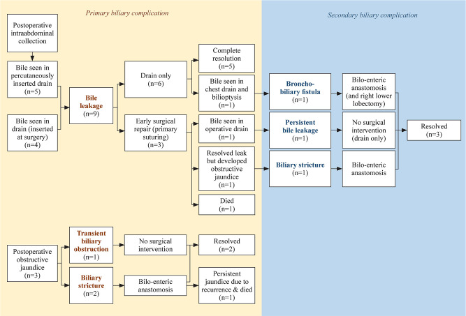
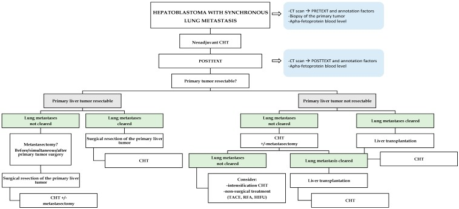
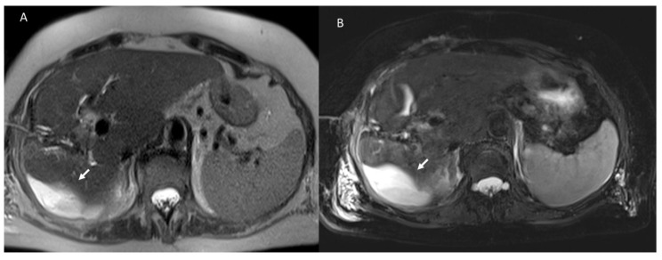
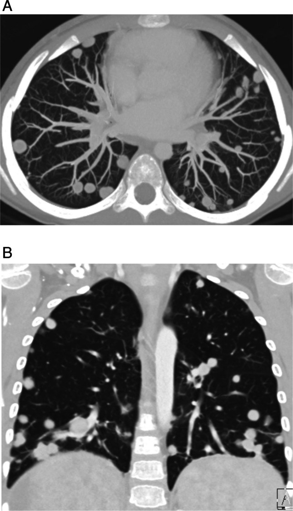
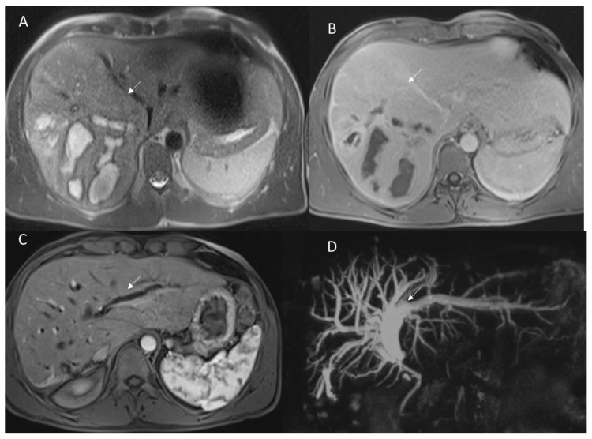

693 — Theo dõi và biến chứng sau cắt u gan ở trẻ: biloma, hẹp đường mật, tái phát & di căn phổi / Post-resection liver tumours in children
Tags: pattern:o-dich-sau-mo pattern:hep-duong-mat vung:gan protocol:CT-MRI protocol:AFP incidentaloma:di-can-phoi
Mức chắc chắn (certainty): tổng hợp y văn (literature synthesis) — đoàn hệ hồi cứu, review hình ảnh và thuật toán từ y văn mở; số liệu đọc trực tiếp từ bài gốc ghi PMCID trong sources.md; ảnh CC BY/CC BY-NC, tên tác giả đối chiếu authorString Europe PMC.
Bài này nối tiếp 664 (u mô đệm lành), 665 (khối u gan nhi), 666 (nang ống mật chủ) và 663 (sarcoma phôi gan). Các bài trước trả lời “u là gì, cắt hay không”; bài này trả lời “sau khi cắt u, ổ dịch nào là bình thường – ổ nào là biến chứng, hẹp đường mật đọc thế nào, và làm sao phát hiện tái phát/di căn phổi sớm”.
1. Tổng quan bệnh học – cơ chế hình ảnh
- Bối cảnh: hepatoblastoma (HB) là u gan ác hay gặp nhất ở trẻ < 3 tuổi; cắt gan + hóa trị tân bổ trợ (PLADO/SIOPEL) là chuẩn. Trong một đoàn hệ 26 trẻ, 19 ca (73%) được cắt gan, 2 ca (10,5%) tái phát, sống không bệnh 89,5%, sống toàn bộ 81,8% ở 3 và 5 năm (Shah 2026, PMC13061486).
- Biến chứng đường mật sau cắt gan ở trẻ không hiếm: 12/86 ca (14%) có biến chứng đường mật nguyên phát — 9 rò mật (bile leak) và 3 hẹp/tắc đường mật (biliary obstruction) (Othman 2023, PMC10335567). Đây là lý do mọi ổ dịch sau mổ phải được đọc theo bản chất mật – máu – mủ, không chỉ theo kích thước.
- TẠI SAO biloma hình thành: mặt cắt gan để lại các nhánh đường mật nhỏ bị cắt; nếu không được khâu kín hoặc bị thiếu máu, mật rò vào khoang cắt. Mật là chất gây viêm mạnh (muối mật, enzyme tiêu hóa) → tạo ổ dịch có vỏ xơ, dễ bội nhiễm. Vị trí điển hình: dưới cơ hoành/khoang cắt, cạnh gan, hoặc quanh đường mật.
- Vì sao biloma sáng trên T2 và tối trên T1: dịch mật gần như nước tự do → thời gian T2 dài (rất sáng), T1 dài (tối); không có tế bào gan nên không ngấm gadoxetate ở thì gan–mật (hepatobiliary phase, HBP). Trên CT, biloma là dịch 0–20 HU, bờ mỏng, không vôi hóa, không khí (trừ khi vừa mổ/đã đặt dẫn lưu).
- Vì sao áp-xe khác biloma: ổ mủ có nhiều tế bào, protein và xác bạch cầu → hạn chế khuếch tán (DWI sáng, ADC thấp), vách dày ngấm thuốc, có thể khí trong ổ (−1000 HU). Khí một mình không chứng minh nhiễm trùng vì có thể vào trong lúc mổ hoặc qua ống dẫn lưu.
- Máu tụ (hematoma): máu cấp 50–80 HU trên CT; trên MRI đổi tín hiệu theo tuổi máu — hemoglobin khử (deoxyhemoglobin) T1 đồng/tối, T2 rất tối; methemoglobin bán cấp T1 sáng. Đây là điểm phân biệt với biloma (T1 luôn tối).
- Hẹp đường mật sau cắt: thường do thiếu máu hoặc tổn thương ống mật tại mặt cắt/miệng nối. Trên MRI, hẹp là chỗ tín hiệu mật giảm đột ngột kèm giãn đường mật phía trên; trên MRCP thấy “cây mật” giãn không liên tục. HBP có thể cho thấy đoạn mật không ngấm/ứ trệ.
- TẠI SAO tái phát khó đọc: mô hạt lành sau mổ ngấm thuốc thì động mạch và có thể giả “nốt”; nhưng mô hạt không có washout điển hình và giảm dần theo thời gian, trong khi tái phát HB thường ngấm mạnh thì động mạch rồi thải thuốc và tăng kích thước, kèm AFP tăng.
- Di căn phổi — ngưỡng định nghĩa: khoảng 20% trẻ HB có di căn lúc chẩn đoán, hay gặp nhất ở phổi; di căn phổi được định nghĩa là một nốt > 10 mm hoặc nhiều nốt với ít nhất một nốt > 5 mm; CT là tiêu chuẩn vàng (Angelico 2019, PMC6895839).
- Tần suất tái phát và vị trí: trong 25 trẻ cắt gan/ghép gan, 5 ca (20%) tái phát, TOÀN BỘ là di căn xa (phổi hoặc hạch trung thất); xâm lấn mạch (cửa hoặc gan) p = 0,038 và phải ghép gan p = 0,016 là yếu tố liên quan tái phát (Jivani 2026, PMC13446955).
- Tiên lượng khi có di căn phổi: tổng hợp 434 trẻ HB có di căn phổi đồng thời cho thấy sống toàn bộ khoảng 83%, tái phát 40% sau trung vị 4 năm theo dõi; mổ nốt phổi (metastasectomy) bằng cắt bờ (wedge resection) được khuyến cáo để giữ chức năng phổi (Angelico 2019).
2. Mẫu hình + chẩn đoán phân biệt theo vị trí và thời điểm (gamut)
- Gamut theo thời gian sau mổ:
- 0–30 ngày: tụ máu/seroma (ổ dịch đơn thuần), biloma sớm, áp-xe, tắc đường mật thoáng qua do phù nề, huyết khối tĩnh mạch cửa/gan, suy gan cấp.
- 1–6 tháng: biloma/áp-xe tồn tại, hẹp đường mật, giả phình động mạch gan → hemobilia, hẹp miệng nối mật–ruột (nếu có), tràn dịch màng phổi do rò mật qua cơ hoành (bilothorax).
- > 6 tháng: tái phát tại diện cắt, hẹp đường mật muộn, di căn phổi/hạch, nốt tăng sản lành (FNH-like) sau hóa trị, biến chứng muộn của ruột non–mạc treo.
- Gamut theo vị trí:
- Khoang cắt/dưới hoành: biloma, áp-xe, máu tụ, seroma, tái phát tại diện cắt.
- Rốn gan/đường mật: rò mật, hẹp, sỏi mật sau mổ, viêm đường mật.
- Mạch máu: giả phình động mạch gan (hemobilia), huyết khối tĩnh mạch cửa, hẹp động mạch gan.
- Phổi–trung thất: di căn phổi, hạch trung thất, tràn dịch/tràn khí màng phổi sau mổ.
- Mẹo định khu “ổ dịch cạnh gan”:
- Biloma thường bờ mỏng, đơn thùy, nằm sát diện cắt, có thể thay đổi theo tư thế.
- Áp-xe thường vách dày, bờ không đều, có khí, kèm sốt/CRP tăng.
- Máu tụ có HU cao (50–80) ở thì không cản quang, T1 sáng khi bán cấp.
- Seroma là dịch 0–20 HU, không triệu chứng, tự teo dần.

Trái: biloma — MRI T2, ổ dịch tăng tín hiệu mạnh, bờ mỏng, không khí. Phải: áp-xe — CT, ổ dịch có khí trong ổ và vách dày. Cả hai ảnh: PMC9221607, CC BY 4.0; ảnh ghép letterbox giữ nguyên tỷ lệ.3. Bảng so sánh phân biệt (ma trận đối chiếu)
| Thực thể (entity) | Hình ảnh điển hình (CT/MRI) | Chốt vào (rule-in) | Chốt loại (rule-out) | Gợi ý xác nhận |
|---|---|---|---|---|
| Biloma (rò mật khu trú) | Ổ dịch 0–20 HU, bờ mỏng, sát diện cắt; T2 rất sáng, T1 tối, không ngấm; HBP không ngấm (trừ khi thông với đường mật) | Dịch mật + vị trí sát mặt cắt + không khí/vách | T1 sáng hoặc HU > 40 → nghĩ máu tụ | Siêu âm + MRI/MRCP; định lượng bilirubin dịch hút |
| Áp-xe trong ổ cắt | Ổ dịch vách dày ngấm thuốc, khí trong ổ, phù nề quanh; DWI sáng/ADC thấp | Sốt + CRP tăng + vách dày/khí | Không triệu chứng, vách mỏng, không hạn chế khuếch tán → không phải áp-xe | Chọc hút/cấy; CT có cản quang |
| Máu tụ/seroma | Máu cấp 50–80 HU, T1 đồng/tối, T2 tối; seroma 0–20 HU, T1 tối, T2 sáng | HU cao hoặc T1 sáng (methemoglobin) | Dịch thuần nước, không tăng HU → seroma | CT không cản quang, MRI T1/T2 |
| Hẹp đường mật | Hẹp đột ngột + giãn đường mật trên chỗ hẹp; MRCP thấy cây mật gián đoạn; HBP ứ trệ | Giãn đường mật trên + hẹp tại miệng nối/mặt cắt | Không giãn trên chỗ hẹp → không tắc nghẽn | MRCP/HBP; ERCP/PTC nong hoặc mổ lại |
| Tái phát tại diện cắt | Nốt ngấm mạnh thì động mạch + washout, tăng kích thước; có thể xâm lấn mạch | Ngấm–thải thuốc + AFP tăng + tăng kích thước | Ngấm đều, không washout, teo dần → mô hạt | MRI gan động học + AFP; sinh thiết khi còn nghi |
| Di căn phổi | Nốt đặc, bờ rõ, ngoại vi/đáy phổi; có thể canxi hóa; nhiều nốt hai bên | Nốt > 10 mm hoặc nhiều nốt với ≥ 1 nốt > 5 mm | Nốt < 5 mm đơn độc, bờ mờ, có vôi hóa trung tâm → nghĩ lành | CT ngực lát mỏng; so phim cũ; sinh thiết/cắt nốt chọn lọc |
| Nốt tăng sản lành sau hóa trị | Nốt ngấm đồng nhất, không washout, kích thước ổn định/giảm; thường nhiều nốt nhỏ | Ổn định qua 2 lần chụp + AFP bình thường | Washout + AFP tăng → không phải lành | MRI gan + AFP theo dõi |

Sơ đồ 86 ca cắt gan ở trẻ: 9 rò mật (5 chỉ dẫn lưu, 3 mổ sớm, 1 dẫn lưu + đặt stent), 3 tắc mật (1 thoáng qua, 2 hẹp thật), 1 rò mật–phế quản, và các biến chứng thứ phát (hẹp, rò dai dẳng). Nguồn: Othman MY, Teh KH, Zahari Z, World J Pediatr Surg 2023;6(3):e000589 (PMC10335567, Fig. 1), CC BY-NC — dùng phi thương mại, giữ nguyên bản.4. Protocol theo dõi + hệ phân tầng và thuật toán
- Mốc chụp/xét nghiệm (theo chương trình dùng trong đoàn hệ 25 trẻ — Jivani 2026, PMC13446955):
- Sau mổ 3 tháng: khám + AFP + siêu âm (USG).
- Sau đó mỗi 6 tháng trong 3 năm: AFP + USG.
- CT có cản quang (CECT) ngực–bụng–chậu khi AFP tăng hoặc USG nghi ngờ — không chụp CT định kỳ chỉ vì lịch.
- Lưu ý trung thực: đây là phác đồ của một trung tâm, không phải đồng thuận toàn cầu; SIOPEL/COG có thể khác về nhịp và thời gian theo dõi. Bài không khẳng định một “chuẩn duy nhất”.
- Đánh giá ổ dịch sau mổ:
- Siêu âm là bước đầu (rẻ, không xạ): xác định ổ dịch, vách, khí, Doppler mạch.
- CT có cản quang khi nghi áp-xe, máu tụ, giả phình, hoặc cần đánh giá mạch.
- MRI + MRCP/HBP khi nghi rò mật/hẹp đường mật: T2 thấy ổ dịch và giãn mật; HBP (gadoxetate) thấy mật rò ra ngoài đường mật ở thì gan–mật muộn (khoảng 20 phút); MRCP cho bản đồ cây mật.
- Chọc hút/dẫn lưu khi ổ dịch có triệu chứng, nhiễm trùng, hoặc chèn ép; không có ngưỡng kích thước được đồng thuận — quyết định theo triệu chứng và diễn tiến (bài gốc chỉ mô tả dẫn lưu ở các ca có triệu chứng).
- Xử trí rò mật theo bậc (Othman 2023):
- Rò nhẹ, không nhiễm trùng: dẫn lưu qua da — 6/9 ca chỉ dẫn lưu, có 1 ca tiến triển thành bilothorax.
- Rò dai dẳng/có biến chứng: mổ sớm khâu lại (3/9 ca) hoặc tái tạo đường mật (biliary reconstruction) (4 ca).
- Hẹp đường mật: nong bóng/stent qua ERCP hoặc PTC; thất bại → nối mật–ruột (hepaticojejunostomy); trong đoàn hệ 86 ca, 4 ca cần tái tạo đường mật (gồm cả hẹp và rò phức tạp).
- Theo dõi sau khi hết rò vẫn bắt buộc: biến chứng đường mật thứ phát có thể xuất hiện sau khi rò đã khỏi (Othman 2023).
- Tầm soát di căn phổi:
- CT ngực lát mỏng là tiêu chuẩn vàng; ngưỡng nghi: 1 nốt > 10 mm hoặc nhiều nốt, ít nhất 1 nốt > 5 mm (Angelico 2019).
- Nốt nhỏ < 5 mm thường không đặc hiệu (hạch nội phổi, ổ viêm, hạt canxi); cần so sánh phim cũ và chụp lại thay vì sinh thiết ngay.
- Khi di căn phổi còn sau hóa trị: cắt bờ phổi (wedge resection) ± điều trị tại chỗ; với HB không mổ được gan, di căn phổi phải kiểm soát được trước khi ghép gan (Angelico 2019).

Luồng quyết định: chẩn đoán → hóa trị tân bổ trợ → đánh giá u gan mổ được hay không → cắt u ± cắt nốt phổi hoặc ghép gan; di căn không kiểm soát được là chống chỉ định ghép gan. Nguồn: Angelico R et al., Cancers (Basel) 2019 (PMC6895839, Fig. 2), CC BY 4.0.flowchart TD
A[Sau cắt u gan ở trẻ] --> B[3 tháng: AFP + siêu âm]
B --> C{AFP bình thường và siêu âm sạch?}
C -->|Có| D[Theo dõi 6 tháng/lần x 3 năm: AFP + siêu âm]
C -->|Không| E[CT có cản quang ngực-bụng-chậu]
D --> F{AFP tăng hoặc siêu âm nghi?}
F -->|Có| E
F -->|Không| D
E --> G{Ổ dịch hay nốt?}
G -->|Ổ dịch| H[MRI + MRCP/HBP]
H --> I{Triệu chứng/nhiễm trùng?}
I -->|Có| J[Dẫn lưu/chọc hút + cấy]
I -->|Không| K[Theo dõi, chụp lại]
G -->|Nốt gan| L[MRI động học + AFP]
L --> M{Washout + AFP tăng?}
M -->|Có| N[Tái phát: hội chẩn mổ/hóa trị]
M -->|Không| K
G -->|Nốt phổi| O[CT ngực lát mỏng, so phim cũ]
O --> P{> 10 mm hoặc nhiều nốt với nốt > 5 mm?}
P -->|Có| Q[Nghi di căn: cắt nốt/hóa trị theo hội chẩn]
P -->|Không| K
- Phân tầng nguy cơ tái phát (dùng để tăng nhịp theo dõi): xâm lấn mạch (tĩnh mạch cửa/gan) và phải ghép gan liên quan tái phát có ý nghĩa trong đoàn hệ 25 trẻ (p = 0,038 và p = 0,016) — Jivani 2026; đây là dữ liệu một trung tâm, cần xác nhận thêm.
5. Biến thể bình thường và cạm bẫy
- Ổ dịch sớm sau mổ là bình thường: hầu hết trẻ có ít dịch/dày mô mềm quanh diện cắt trong 1–2 tuần đầu; chỉ gọi biến chứng khi tăng kích thước, có triệu chứng, khí/vách dày, hoặc bilirubin trong dịch cao.
- Khí trong ổ ≠ áp-xe: khí có thể do mổ mở, ống dẫn lưu, hoặc kim chọc; phải kết hợp sốt, CRP, vách ngấm thuốc và cấy dịch.
- Biloma có thể gây tràn dịch màng phổi (bilothorax): rò mật qua cơ hoành — đã gặp trong đoàn hệ 86 ca; đừng chỉ đọc “tràn dịch” mà bỏ qua ổ dưới hoành.
- HBP không phải lúc nào cũng “bắt” rò: nếu ổ dịch không thông với cây mật, HBP chỉ thấy ổ không ngấm — không loại trừ rò kín. Ngược lại, mật ứ trong đường mật giãn có thể ngấm và giả “u”.
- Mô hạt sau mổ ngấm thuốc: đừng gọi tái phát chỉ vì có nốt ngấm; cần washout, tăng kích thước, AFP tăng, và so sánh 2 lần chụp.
- Nốt phổi nhỏ: < 5 mm thường lành (hạch nội phổi, ổ viêm, canxi); CT có dương tính giả đáng kể ở trẻ — tránh mổ nốt phổi vô ích.
- Sau hóa trị, gan có thể “giả nốt”: nốt tăng sản lành (FNH-like) ngấm đồng nhất, không washout; AFP bình thường là chốt hỗ trợ.
- Bỏ sót di căn hạch trung thất: tái phát HB có thể biểu hiện hạch trung thất chứ không chỉ nốt phổi (5/5 ca tái phát trong đoàn hệ Jivani là di căn xa) — đọc CT ngực phải ghi hạch.
- Cạm bẫy “thỏa mãn tìm kiếm”: thấy biloma rõ rồi bỏ qua nốt gan mới hoặc nốt phổi nhỏ — luôn đọc toàn bộ gan + phổi + hạch trên cùng một lần chụp.
6. Tự lượng giá — Blind Quiz
Ca 1 — Ca minh họa người lớn: bệnh nhân cắt phân thùy VIII vì di căn gan 1 tuần trước, sốt nhẹ, siêu âm thấy ổ dịch dưới hoành phải. Ở trẻ sau cắt u gan, biloma có hình ảnh tương tự.

- Hỏi: Ổ dịch nằm ở đâu, tín hiệu gì? Ba khả năng và dấu hiệu nào giúp phân biệt?
Bấm để hiện đáp án (findings + chẩn đoán)
- Dấu hiệu: ổ dịch dưới hoành phải, tăng tín hiệu mạnh trên T2 (A) và T2 fat-sat (B), bờ mỏng, không có vách dày/khí; mũi tên chỉ ổ dịch sát diện cắt.
- Chẩn đoán: biloma (ổ dịch mật) sau cắt gan — tín hiệu dịch thuần nước, không ngấm thuốc.
- Phân biệt: áp-xe (vách dày, khí, hạn chế khuếch tán, sốt/CRP cao), máu tụ (T1 sáng/HU cao), seroma (dịch đơn thuần, không triệu chứng). Chốt: vị trí sát diện cắt + T2 rất sáng + không vách dày.
- Lưu ý nguồn: ca trong bài gốc là người lớn (cắt phân thùy VIII vì di căn); dấu hiệu hình ảnh áp dụng cho trẻ nhưng không phải ca nhi — đây là chú thích phản biện, không sửa nguồn.
- Nguồn ảnh: PMC9221607 (Diagnostics 2022), CC BY 4.0 — Cutolo C et al.
Ca 2 — Bé trai 6 tuổi, theo dõi sau cắt hepatoblastoma; AFP tăng nhẹ, không triệu chứng.

- Hỏi: Mô tả phân bố nốt? Ngưỡng nào gọi là di căn? Cần làm gì tiếp?
Bấm để hiện đáp án (findings + chẩn đoán)
- Dấu hiệu: nhiều nốt đặc, bờ rõ, kích thước khác nhau, hai bên phổi, ưu thế ngoại vi và thùy dưới; hình MIP (A) và coronal (B) cho thấy phân bố rải rác.
- Chẩn đoán: di căn phổi của hepatoblastoma (đã xác nhận bằng sinh thiết trong bài gốc).
- Ngưỡng: một nốt > 10 mm hoặc nhiều nốt với ít nhất một nốt > 5 mm (Angelico 2019); ca này vượt ngưỡng rõ.
- Việc cần làm: CT ngực lát mỏng (nếu chưa), đối chiếu phim cũ, hội chẩn ung thư–phẫu thuật; nếu di căn còn sau hóa trị → cắt bờ phổi ± điều trị tại chỗ.
- Nguồn ảnh: PMC12831686 (Pediatr Radiol 2026), CC BY 4.0 — Tanimoto AA et al.
Ca 3 — Ca minh họa người lớn: bệnh nhân 8 tháng sau cắt gan vì hepatosarcoma, vàng da nhẹ, siêu âm thấy đường mật trong gan giãn. Hình ảnh hẹp–giãn đường mật áp dụng tương tự ở trẻ.

- Hỏi: Dấu hiệu chính? Chẩn đoán? Hai hướng xử trí và khi nào chuyển mổ?
Bấm để hiện đáp án (findings + chẩn đoán)
- Dấu hiệu: giãn đường mật trong gan phía trên một chỗ hẹp/gián đoạn (mũi tên); MRCP (D) thấy cây mật giãn, mất liên tục tại chỗ hẹp; HBP (C) cho thấy đoạn mật ứ trệ.
- Chẩn đoán: hẹp đường mật sau cắt gan (thiếu máu/miệng nối) gây ứ mật.
- Xử trí: nong bóng/stent qua ERCP hoặc PTC trước; nếu thất bại/tái hẹp → nối mật–ruột (hepaticojejunostomy). Chỉ định mổ khi hẹp không qua được, tái hẹp sau 2 lần nong, hoặc có biến chứng nhiễm trùng/ứ mật nặng.
- Lưu ý nguồn: ca gốc là bệnh nhân hepatosarcoma người lớn; hình ảnh hẹp–giãn đường mật áp dụng chung, nhưng không phải ca nhi — chú thích phản biện.
- Nguồn ảnh: PMC9221607 (Diagnostics 2022), CC BY 4.0 — Cutolo C et al.
Bài liên quan chéo
- 664 – U mô đệm lành của gan ở trẻ
- 665 – Khối u gan ở trẻ: tiếp cận chẩn đoán
- 666 – Nang ống mật chủ (Todani I–V)
- 663 – Sarcoma phôi gan chưa biệt hóa (UESL)
- 641 – Theo dõi hậu phẫu Kasai ở teo đường mật
Ảnh
- Nguồn và giấy phép từng ảnh:
images/CREDITS.md. Ảnh CC BY 4.0 dùng/ghép được; ảnh CC BY-NC (PMC10335567) dùng phi thương mại, giữ nguyên bản, không ghép. - Ảnh ghép letterbox không crop/kéo giãn. Ảnh không tải được vì bản quyền: chỉ dẫn link trong
sources.md.
Không dùng để chẩn đoán độc lập khi chưa có người hướng dẫn.